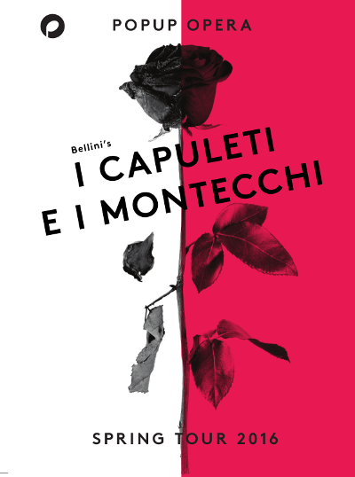

The Capuleti and Montecchi gangs fight for control of Verona.
Capellio, the head of the Capuleti family, refuses to accept peace
until his son's death at the hands of Romeo, the Montecchi leader,
is avenged.
Romeo fled Verona as a child and his identity is unknown to his enemies.
He has secretly returned to Verona many times and is engaged in an illicit
affair with Capellio's daughter, Giulietta.
Lorenzo, a trusted consigliere to the Capuleti family, knows about Giulietta's relationship with Romeo and had been helping them.
Tebaldo, an ambitious Capuleti lieutenant, also pursues Giulietta's
hand in marriage.
Tebaldo has disobeyed orders and captured a Montecchi gang member,
bringing him to the basement of the Capuleti house.
E serbato a questo acciaro
del tuo sangue la vendetta
l'ho giurato per Giulietta:
tutta Italia, il Cielo lo sa.
Let vengeance of your blood
instead be reserved for me.
I swear it by Giulietta:
all Italy, Heaven knows it.
Tu d'un nodo a me si caro
solo affretta il dolce istante:
ed il voto dell'amante
il consorte adempirà.
Make me your family,
hasten the sweet moment when,
as husband and son,
I will fulfil this vow.
L'amo tanto, e m'è si cara,
più del sol che mi rischiara;
riposta, viva in lei ogni gioia del mio cor.
I love her so much, to me she is so dear,
more than the sun which lights my way;
all the joy in my heart lives in her.
Ma se avesse il mio contento
a costarle un sol lamento,
ah! piuttosto io sceglierei mille giorni di dolor.
Don't hurt her! If my happiness were
to cost her a single moment of sorrow,
ah! rather would I choose a thousand days of grief.
Se Romeo t'uccise un figlio,
in battaglia a lui diè morte:
incolparne dei la sorte;
If Romeo killed your son,
it was in the heat of battle,
and for that you cannot blame him;
blame Fate instead.
ei ne pianse, e piange ancor.
Deh! Ti placa, e un altro figlio
troverai nel mio signor.
He wept about it and is still weeping:
But listen! You can find another son;
Romeo could be a new son to you.
La tremenda ultrice spada
a brandir Romeo s'appresta,
e qual folgore funesta sto
mille morti apporterà.
The dreadful murderous response
that Romeo will prepare,
will be like a deadly storm,
and bring a thousand deaths.
Ma v'accusi al ciel irato
tanto sangue invan versato;
e su voi ricada il sangue
che alla patria costerà.
But angry heaven will blame you
for so much blood unnecessarily spilt;
and that blood will be on your hands.
Lorenzo tells Giulietta that her lover has been captured by her father's thugs, and that he has also decided she must marry Tebaldo that very day.
Oh! quante volte, oh quante
ti chiedo al ciel piangendo!
Con quale ardor t'attendo,
e inganno il mio desir!
Oh how many times,
have I called to you, weeping to Heaven!
I wait for you, with bated breath,
yet my heart's desire is frustrated!
Raggio del tuo sembiante
ah! parmi il brillar del giorno:
ah! l'aura che spira intorno
mi sembra un tuo sospir.
I see your likeness
in the light of day,
The breeze that blows around me
feels like your soft breath.
Si, fuggire! A noi non resta
altro scampo in danno estremo.
Yes, run away! We have no choice,
no other escape, in this terrible situation.
Miglior patria avrem' di questa,
ciel migliore ovunque andremo:
d'ogni ben che il cor desia
a noi luogo amor terrà.
We can have a better home than this,
a better sky above us, wherever we go,
everything which our hearts desire,
Love can give us, in a new land.
|
Ah, crudele, d'onor ragioni quando a me tu sei rapita? Questa legge che m'opponi è smentita dal tuo cor. Deh! t'arrendi a' preghi miei, se ti cal della mia vita: se fedele ancor mi sei, ah!, non udir che il nostro amor. |
Cruel one, you talk about family just when you are being taken from me? This law which you impose on us is a refutation of your heart. Surrender instead to my prayers, If you care about me, if you are true to me, ah! listen only to our love. |
Ah, crudele, d'onor ragioni
quando a me tu sei rapita?
Questa legge che m'opponi
è smentita dal tuo cor.
Cruel one, you talk about family
just when you are being taken from me?
This law which you impose on us
is a refutation of your heart.
Deh! t'arrendi a' preghi miei,
se ti cal della mia vita:
se fedele ancor mi sei, ah!,
non udir che il nostro amor.
Surrender instead to my prayers,
If you care about me,
if you are true to me, ah!
listen only to our love.
Preparations are under way for Tebaldo and Giulietta's wedding.
The Montecchi attack has stopped the wedding.
Giulietta is left alone...
Ah! per Romeo v'invoco,
Cielo, Destino, Amore.
Ah! For Romeo I invoke you,
Heaven, Destiny, Love.
|
Ah! per Romeo v'invoco, Cielo, Destino, Amore. |
Ah! For Romeo I invoke you, Heaven, Destiny, Love. |
Se ogni speme è a noi rapita
di mai più vederci in vita,
questo addio non fia l'estremo,
ah! ci vedremo almeno
in cielo.
If all hope is taken from us
of ever seeing each other in life,
may this farewell not be the last,
ah! at least we will see each other
in Heaven.
|
Se ogni speme è a noi rapita di mai più vederci in vita, questo addio non fia l'estremo, ah! ci vedremo almeno in cielo. |
If all hope is taken from us of ever seeing each other in life, may this farewell not be the last, ah! at least we will see each other in Heaven. |
Several hours have passed. Romeo has escaped the Capuleti house,
and skirmishes between the two gangs have died down.
Giulietta is still in the house. Capellio is furious with his
daughter; she has betrayed him totally. He holds her prisoner while
he decides what to do with her.
Ah! non poss'io partire
priva del tuo perdono:
presso alla tomba io sono.
Ah! dammi un amplesso almeno.
Pace una volta all'ire...
Ah! I cannot leave
without your forgiveness.
I am near to the grave now.
Ah! at least hold me;
let your anger turn to peace this once...
pace ad un cor che muore...
Dorma ogni tuo furore
del mio sepolcro in sen.
Ah! padre mio,
perdona un cor che muor.
peace for a heart that is dying...
Let all of your anger sleep
with me, in my tomb.
Oh my father,
forgive a heart which is dying.
|
Ah! non poss'io partire priva del tuo perdono: presso alla tomba io sono. Ah! dammi un amplesso almeno. Pace una volta all'ire... pace ad un cor che muore... Dorma ogni tuo furore del mio sepolcro in sen. Ah! padre mio, perdona un cor che muor. |
Ah! I cannot leave without your forgiveness. I am near to the grave now. Ah! at least hold me; let your anger turn to peace this once, peace for a heart that is dying... Let all of your anger sleep with me, in my tomb. Oh my father, forgive a heart which is dying. |
On the street outside the house, in the small hours of night...
Pace alla tua bell'anima
dopo cotanti affanni!
vivi, se non fra gli uomini,
vivi, o Giulietta, in ciel.
Peace to your beautiful soul
after such anguish!
Live, if not among men
live, O Juliet, in Heaven.
|
Pace alla tua bell'anima dopo cotanti affanni! vivi, se non fra gli uomini, vivi, o Giulietta, in ciel. |
Peace to your beautiful soul after such anguish! Live, if not among men live, O Juliet, in Heaven. |
Ah! di te più disperato,
più di te son io trafitto...
ah l'amor mio come un delitto
rinfacciando il cor mi va.
Ah! I am more desperate than you,
I am pierced more deeply.
Ah, the pain of my love
comes to punish my heart
|
Ah! di te più disperato, più di te son io trafitto... ah l'amor mio come un delitto rinfacciando il cor mi va. |
Ah! I am more desperate than you, I am pierced more deeply. Ah, the pain of my love comes to punish my heart |
Ecco la tomba,
ancor di fiori sparsa,
molli di pianto ancor.
Altro fra poco maggior del pianto,
altro olocausto avrai.
Here is the tomb,
still strewn with flowers,
still wet with tears.
Soon you will have another,
great storm of tears
| Ecco la tomba, ancor di fiori sparsa, molli di pianto ancor. Altro fra poco maggior del pianto, altro olocausto avrai. | Here is the tomb, still strewn with flowers, still wet with tears. Soon you will have another, great storm of tears |
Sorgi, mio ben,
al suon de' miei sospiri:
ti chiama il tuo Romeo,
sorgi, mio bene.
Wake up, my beloved,
at the sound of my sighs.
Your Romeo calls you,
Wake up, beloved.
|
Sorgi, mio ben, al suon de' miei sospiri: ti chiama il tuo Romeo, sorgi, mio bene. |
Wake up, my beloved, at the sound of my sighs. Your Romeo calls you, Wake up, beloved. |
Deh! tu, bell'anima,
che al ciel ascendi,
a me rivolgiti, con te mi prendi:
Alas! You, beautiful soul
who ascend to Heaven,
return to me, or take me with you.
così scordarmi, così lasciarmi,
non puoi, bell'anima,
nel mio dolor.
You can't forget me like this,
leave me like this, beautiful soul,
in my sorrow.
|
Deh! tu, bell'anima, che al ciel ascendi, a me rivolgiti, con te mi prendi: così scordarmi, così lasciarmi, non puoi, bell'anima, nel mio dolor. |
Alas! You, beautiful soul who ascend to Heaven, return to me, or take me with you. You can't forget me like this, leave me like this, beautiful soul, in my sorrow. |
Vivi, ah! vivi,
e vien talora
sul mio sasso a lagrimar.
Live! Ah! Live!
And come sometimes,
to weep on my grave.
|
Vivi, ah! vivi, e vien talora sul mio sasso a lagrimar. |
Live! Ah! Live! And come sometimes, to weep on my grave. |
|  |